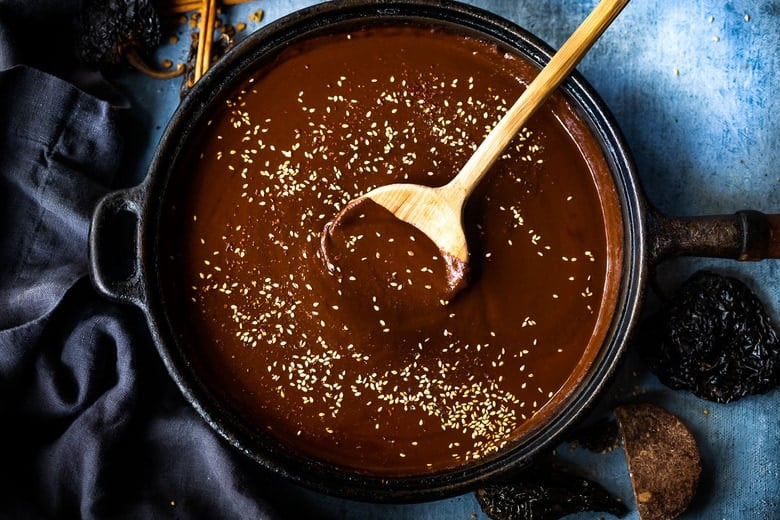

Mole

Description
Mole is a Mexican sauce made with chiles, spices, nuts, and other various ingredients. Some mole recipes (such as this one) contain chocolate. The sauce is known for its rich, earthy, and nutty flavor. It can be used as a sauce or a marinade.
Ingredients
- Chiles (chipotle, guajillo, and ancho)
- Chicken broth
- Dinner roll and corn tortilla
- Tomatillos and tomatoes
- Lard
- Onion and garlic
- Peanuts
- Raisins
- Spices (cumin seeds, dried thyme, allspice berries, whole cloves, and cinnamon sticks)
- Dark chocolate
- White sugar
- Salt
Steps
- Toast the chiles and put them in a blender.
- Simmer the broth and pour it into the blender.
- Toast the roll and tortilla, then transfer to the blender.
- Allow the ingredients to soak in broth, then blend.
- Cook the tomatoes and tomatillos, then transfer them to the blender.
- Cook the onion, garlic, peanuts, raisins, and spices in lard, then transfer to the blender.
- Blend until smooth and pour the mixture into a saucepan.
- Stir in the remaining broth, chocolate, sugar, and salt. Simmer until thickened.